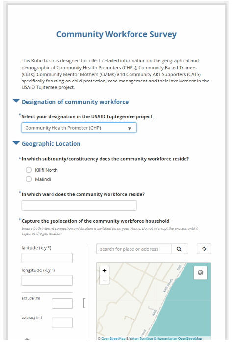
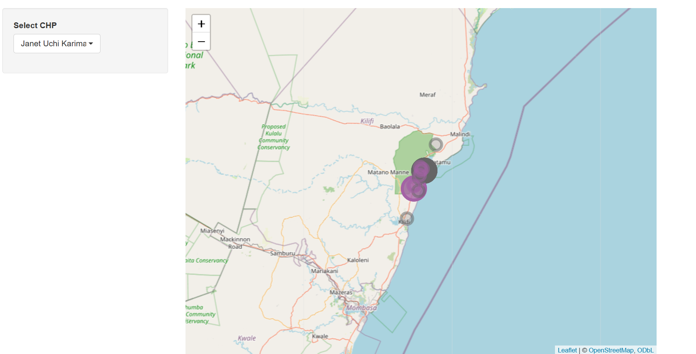
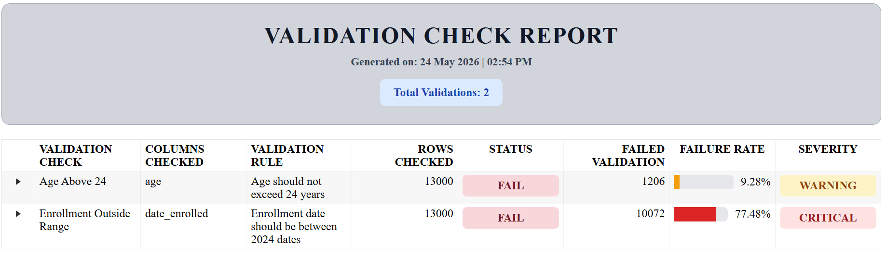

Projects
📌 Strengthening Community Health Promoter Systems through Geospatial Mapping
Geospatial analysis of Community Health Promoter coverage and household distribution using KoboToolbox, R, and Leaflet.
🛠️ validationcheck Package
An R package for automated data validation, quality assurance, and reporting in public health and research workflows.
📌 Strengthening Community Health Promoter Systems through Geospatial Mapping
Organization: Council of Imams and Preachers of Kenya (CIPK) Taita Taveta Branch – USAID TUJITEGEMEE Project
Type: Community Health Systems Strengthening & Geospatial Analysis
Tools: R, Shiny, Leaflet, KoboToolbox, dplyr, Excel
🧠 Problem Statement
During an OVC household validation exercise, program teams identified challenges related to the geographical distribution of households supported by Community Health Promoters (CHPs). Some CHPs were supporting households located far from their areas of operation, while others experienced overlapping household assignments. These inefficiencies affected case management, follow-up visits, and service delivery.
🧪 Methodology
- Designed and deployed a KoboToolbox survey to collect CHP geolocation data.
- Integrated household geolocation records collected during beneficiary validation exercises.
- Cleaned and processed data using R.
- Conducted geospatial analysis using Leaflet to map CHP and household locations.
- Identified overlapping coverage areas and household assignment gaps.
- Developed an interactive map to support evidence-based decision making.
🗺️ Project Workflow
Data Collection

Geolocation survey developed in KoboToolbox and used to collect Community Health Promoter location data.
Analytical Output

Interactive map showing CHP and household distribution used to identify overlaps and service coverage gaps.
📊 Key Findings
- Household assignments were not always aligned with the nearest CHP.
- Several households overlapped across CHP coverage areas.
- Significant variation existed in household distribution among CHPs.
- Distance between CHPs and households affected service delivery efficiency.
🚀 Outcome
- Improved visibility of CHP household coverage areas.
- Identified overlapping household assignments and service delivery gaps.
- Supported evidence-based household realignment decisions.
- Strengthened planning and resource allocation for OVC case management.
- Demonstrated the value of geospatial analytics for community health programming.
🛠️ validationcheck: Function-Based Data Validation Framework
Project Type: R Package for Data Quality Validation
Status: In Development
Tools: R, tidyverse, dplyr, testthat, GitHub
🧠 Problem Statement
Data validation in real-world monitoring and evaluation workflows is often fragmented, with analysts writing repetitive scripts for missing values, duplicates, invalid ranges, and logical inconsistencies.
Existing tools such as pointblank provide powerful validation pipelines, but they require structured setup and configuration that can slow down rapid exploratory analysis in field-based and MEAL environments.
🎯 Solution
validationcheck introduces a function-based validation system that allows users to define and execute validation rules in a simple, readable pipeline while automatically tracking:
- Validation summaries
- Failed records
- Failure rates
- Severity classification (GOOD, WARNING, CRITICAL)
⚙️ Core Function: add_validation()
The core of the package is the add_validation() function:
add_validation(
agent,
label,
columns,
rule,
preconditions = NULL,
check
)
This function allows users to define validation rules in a readable and modular way, without building complex validation pipelines.
🧪 Example Workflow
Below is a typical validation workflow using validationcheck:
report <- validate_data(sample_registry)
report <- report %>%
add_validation(
label = "Age Above 24",
columns = "age",
rule = "Participant age should not exceed 24 years",
preconditions =
filter(hiv_status == "POSITIVE") %>%
distinct(id_number, .keep_all = TRUE),
check = greater_than(24)
) %>%
add_validation(
label = "Duplicate IDs",
columns = "id_number",
rule = "ID numbers should be unique",
check = duplicates()
)
📊 What This System Produces
Each validation check automatically generates:
- ✔ Validation summary per rule
- ✔ List of failed records
- ✔ Failure rate (% of affected rows)
- ✔ Severity classification:
Severity Rules:
GOOD: 0% – 2% failure
WARNING: 2% – 20% failure
CRITICAL: > 20% failure

⚖️ Comparison with pointblank
- pointblank: Structured, enterprise-grade validation framework
- validationcheck: Lightweight, function-first validation system
- pointblank is ideal for production pipelines
- validationcheck is optimized for speed and exploratory analysis
- Reduces setup overhead for field and MEAL workflows
🚀 Expected Impact
- Faster dataset validation in field programs
- Reduced reliance on manual scripts
- Improved consistency in data quality checks
- Standardized validation reporting structure
- Scalable foundation for MEAL data systems